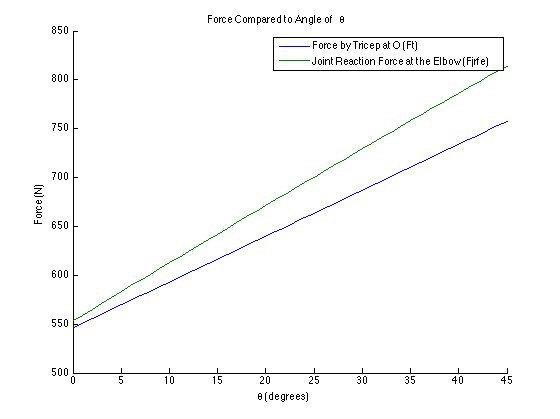

clc, clear all
originTheta = 90;
for theta = 0:1:45
thetaIndex = theta + 1;
Fw = [0, -30, 0];
thetaCable = 30;
FcableSet = 100;
Fcable = [sind(thetaCable), cosd(thetaCable), 0].*FcableSet;
ret = [-2, 14, 0];
reo = [-2.5, -3, 0];
rehSet = [35, 0, 0];
rewSet = (2/3).*rehSet;
reh = [sind(theta), -cosd(theta), 0].* norm(rehSet);
rew = [sind(theta), -cosd(theta), 0].* norm(rewSet);
phi = (180/pi) * atan(reo(1)/reo(2));
deltaTheta = originTheta-theta;
reonew = norm(reo).*[-sind(phi + deltaTheta), -cosd(phi + deltaTheta), 0];
rot = ret - reonew;
Mw = cross(rew, Fw);
Mcable = cross(reh, Fcable);
Mft = cross(reonew, rot/norm(rot));
for i = 1:3
if (Mft(i) == 0)
Ftricep(i) = 0;
else
Ftricep(i) = (Mw(i) + Mcable(i)) / Mft(i);
end
end
FtricepNew = Ftricep(3).*(reonew/norm(reonew));
Fjrfe = Fw + FtricepNew + Fcable;
FtricepLOG(thetaIndex) = norm(Ftricep);
FjrfeLOG(thetaIndex) = norm(Fjrfe);
thetaLOG(thetaIndex) = theta;
end
tM = table(thetaLOG', FtricepLOG', FjrfeLOG');
tM.Properties.VariableNames{'Var1'} = 'Theta';
tM.Properties.VariableNames{'Var2'} = 'Fjrfe';
tM.Properties.VariableNames{'Var3'} = 'Ft';
disp(tM)
figure(1), hold all, plot(thetaLOG, FtricepLOG), plot(thetaLOG, FjrfeLOG),...
legend('Force by Tricep at O (Ft)', 'Joint Reaction Force at the Elbow (Fjrfe)'),...
title('Force Compared to Angle of\theta')
xlabel('\theta (degrees)'), ylabel('Force (N)')
Theta Fjrfe Ft
_____ ______ ______
0 545.97 553.32
1 550.74 559.34
2 555.49 565.34
3 560.22 571.33
4 564.94 577.29
5 569.65 583.24
6 574.35 589.18
7 579.04 595.1
8 583.73 601.02
9 588.41 606.92
10 593.09 612.82
11 597.77 618.71
12 602.44 624.59
13 607.12 630.47
14 611.8 636.34
15 616.48 642.21
16 621.16 648.07
17 625.85 653.93
18 630.53 659.78
19 635.22 665.62
20 639.91 671.46
21 644.61 677.29
22 649.3 683.11
23 654 688.93
24 658.7 694.74
25 663.4 700.54
26 668.11 706.33
27 672.81 712.12
28 677.52 717.89
29 682.23 723.66
30 686.94 729.41
31 691.65 735.15
32 696.36 740.88
33 701.07 746.6
34 705.78 752.31
35 710.49 758
36 715.2 763.68
37 719.91 769.34
38 724.61 774.99
39 729.32 780.62
40 734.02 786.24
41 738.72 791.84
42 743.41 797.42
43 748.1 802.98
44 752.79 808.52
45 757.48 814.05
